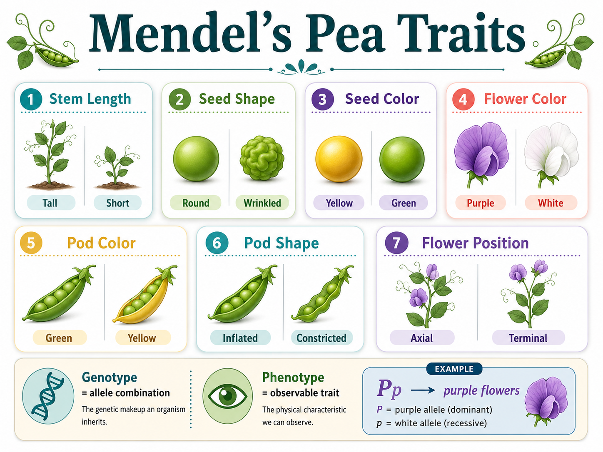
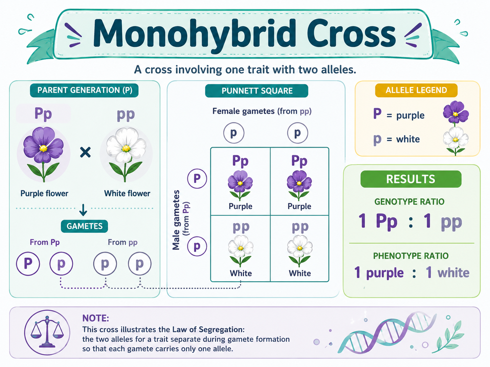
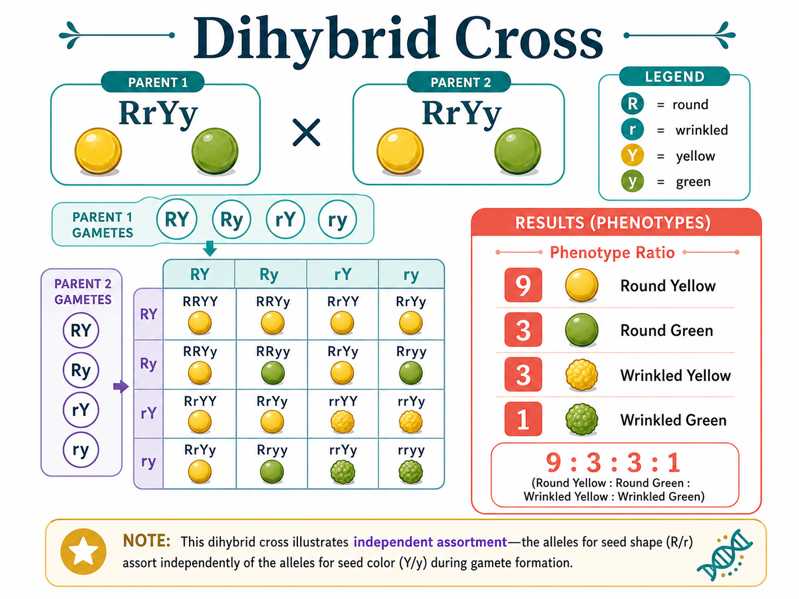
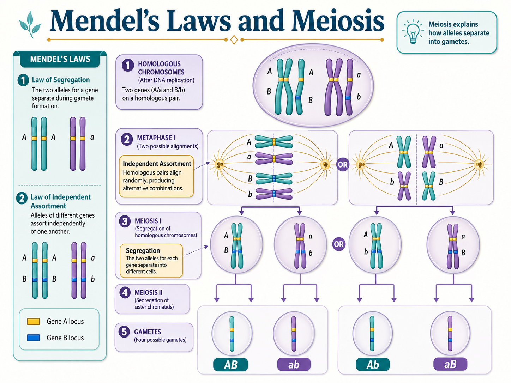
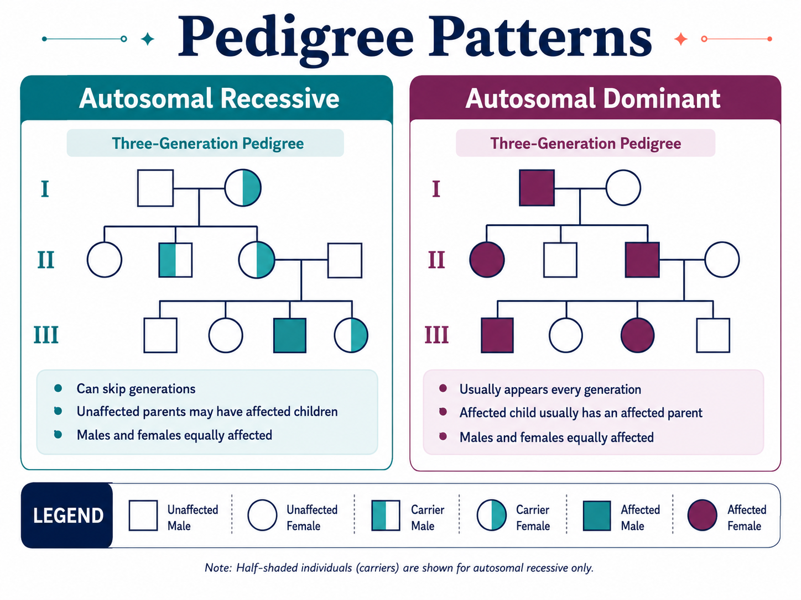
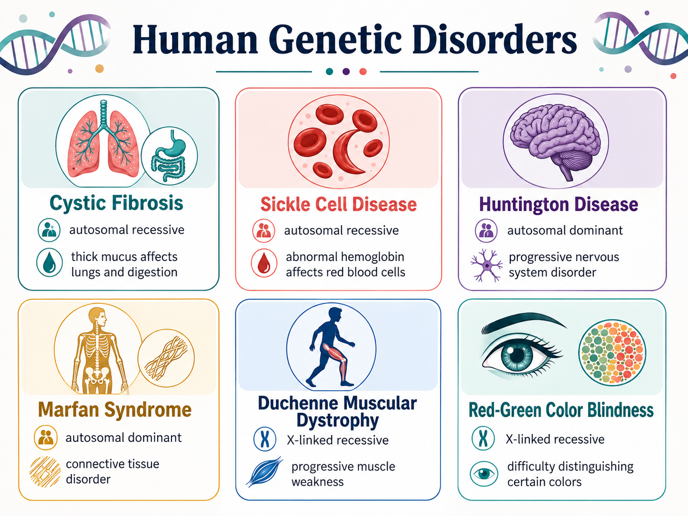
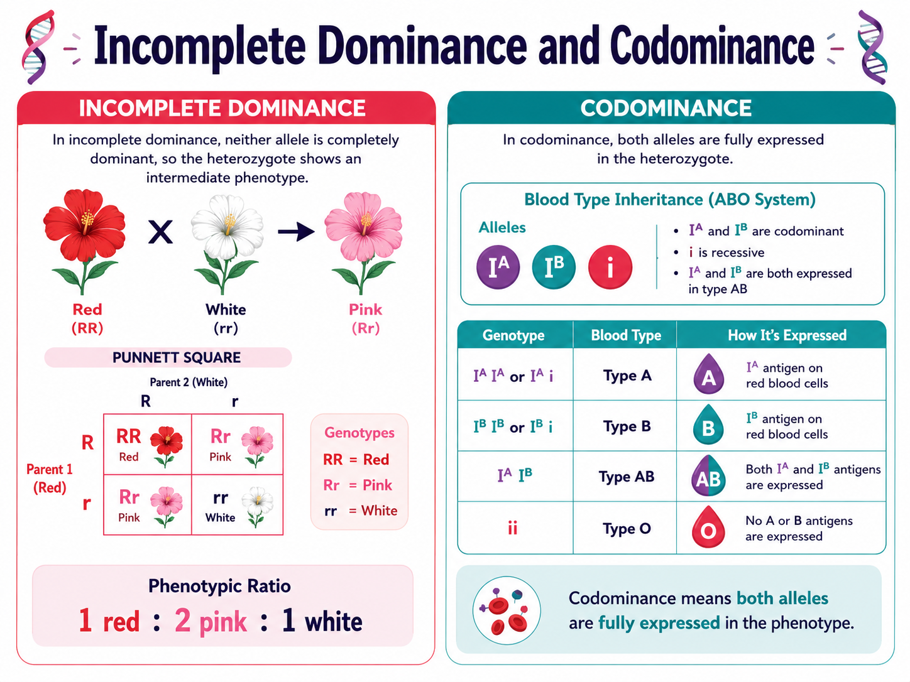
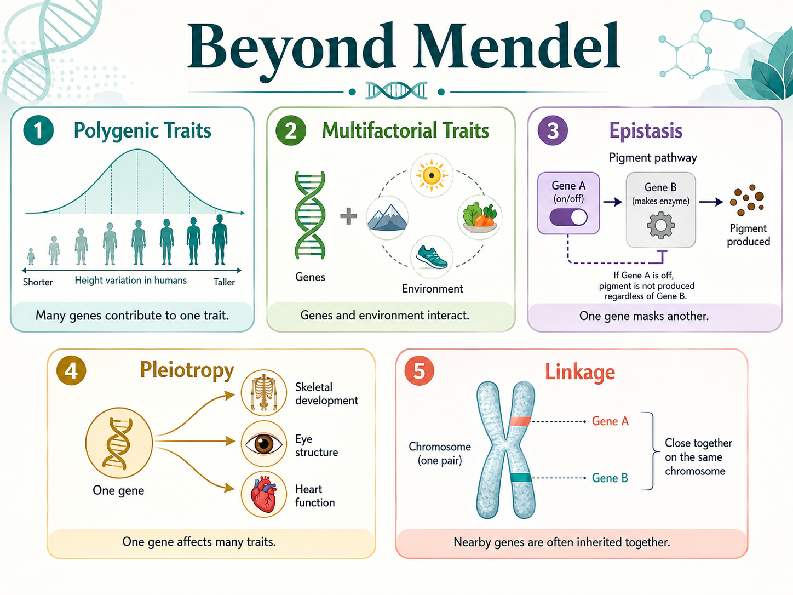
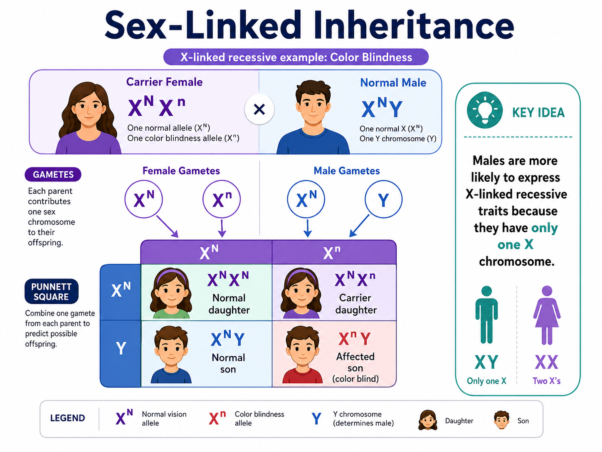

Investigate inheritance patterns using Mendel’s laws, Punnett squares, meiosis, pedigrees, non-Mendelian traits, and sex-linked inheritance.
Station 1 of 10
Purpose • Task • Criteria
Launch the Inheritance Investigation
Purpose
Use genetics as a problem-solving tool. You will practice explaining how traits move from parents to offspring and how inheritance patterns connect to meiosis.
Task
Move through each station, answer the prompts, check your thinking, and build a final Genetics Investigation Report.
Criteria for success
Your report should show accurate Punnett square reasoning, correct inheritance pattern interpretation, and clear explanations in your own words.

Use this overview graphic as your visual anchor for the Mendel-focused parts of the activity.
Submission reminder: At the end, use the report page to print/save your work as a PDF. Upload that PDF to Canvas as directed by your instructor.
Station 1
Generate Your Case File
Enter your name, then generate a case. Your assigned case will personalize several prompts in the activity.
Your case is ready. Continue to the next station.
Station 2
Genetics Decoder
Before solving crosses, decode the language of inheritance.
This graphic can help you connect allele symbols to visible traits before you answer the decoder questions.
GenotypeThe allele combination an organism has.
Aa
PhenotypeThe trait that is expressed or observed.
Dominant vs. recessiveA dominant allele can show with one copy. A recessive trait usually needs two copies.
Your assigned genotype
Station 3
Monohybrid Cross Builder
A monohybrid cross follows one trait. Use the case details to solve and interpret the cross.

Use this worked example as a model while you solve the monohybrid cross for your assigned case.
Build the cross
Station 4
Dihybrid Cross + Independent Assortment
A dihybrid cross follows two traits at the same time. This station connects Mendel’s law of independent assortment to meiosis.

This graphic shows the classic dihybrid seed shape and seed color example.

This second graphic previews how meiosis explains the gametes that appear in a dihybrid cross.
Two-Trait Cross
Parent cross: RrYy × RrYy
R = round seed, r = wrinkled seed Y = yellow seed, y = green seed
Gamete check
Which gametes can a parent with genotype RrYy make?
Station 5
Mendel’s Laws Meet Meiosis
Mendel did not know about chromosomes, but his laws make sense when you connect them to what happens during meiosis.
Study the chromosome diagrams as you connect segregation and independent assortment to meiosis.
Law of Segregation
Allele pairs separate so each gamete receives one allele for a gene.
Law of Independent Assortment
Alleles for different genes can separate independently when genes are on different chromosomes or far apart.
Station 6
Pedigree Detective
Use the family pattern to decide whether the trait is autosomal dominant or autosomal recessive.

Use this reference to compare the clues in your family case before choosing the inheritance pattern.
Match each disorder to the inheritance pattern most commonly emphasized in introductory biology.

Keep this chart nearby as you match each disorder to the inheritance pattern most often associated with it.
Station 8
Beyond Mendel’s Laws
Not every trait follows a simple dominant/recessive pattern. Match each mini-case to the best inheritance concept.


These graphics summarize the main non-Mendelian patterns featured in this station.
Station 9
Sex-Linked Inheritance Challenge
Sex-linked traits often show different patterns in males and females because males typically have one X chromosome and one Y chromosome.

Use this reference when you interpret the X-linked Punnett square and answer the explanation prompt.
Genetics Case Files: Inheritance Investigation Report
Station 10
Final Genetics Investigation Report
Review your report. Then print/save as PDF and upload it to Canvas.
Canvas submission: Choose Print / Save as PDF. In the print window, select Save as PDF as the destination/printer. Upload the saved PDF to the assignment in Canvas.